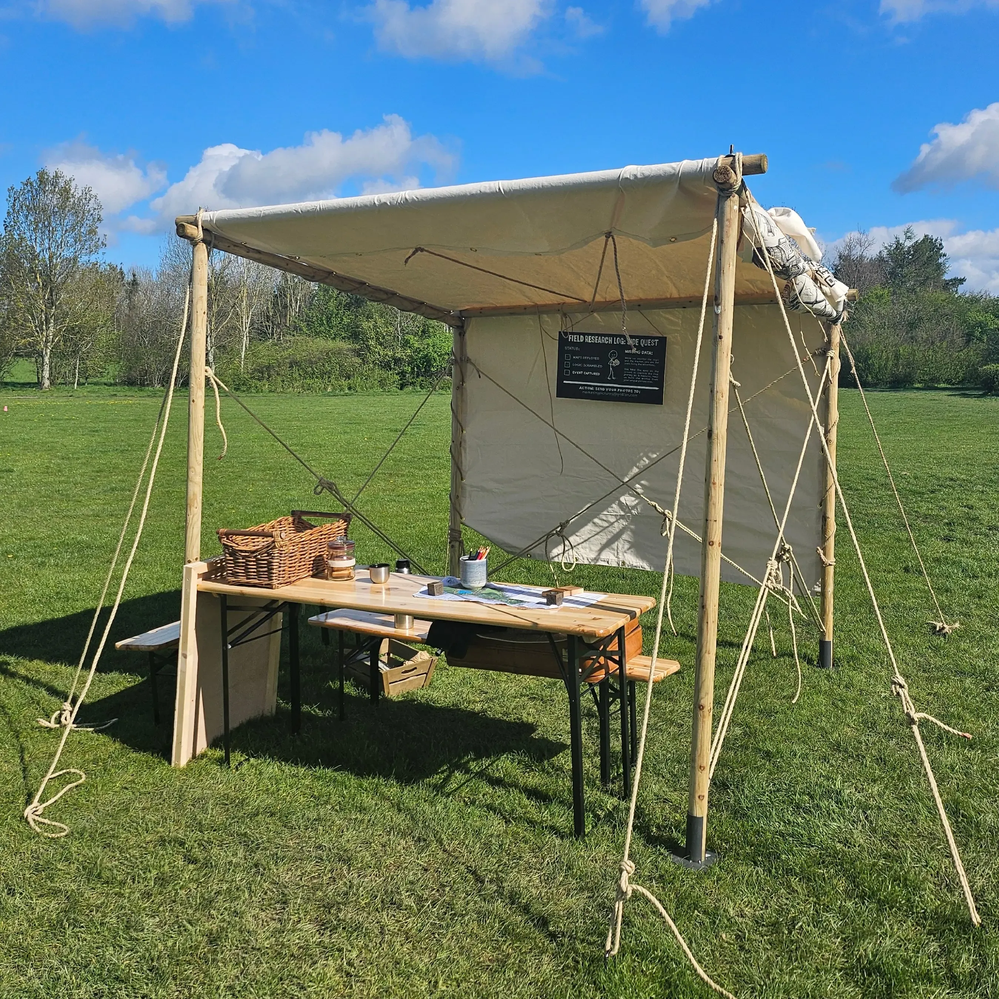
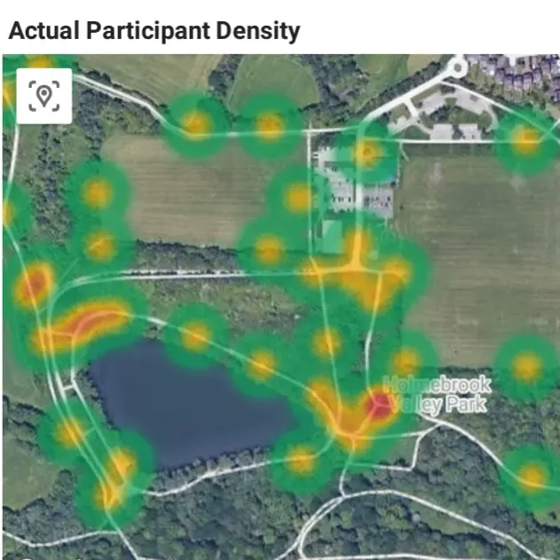
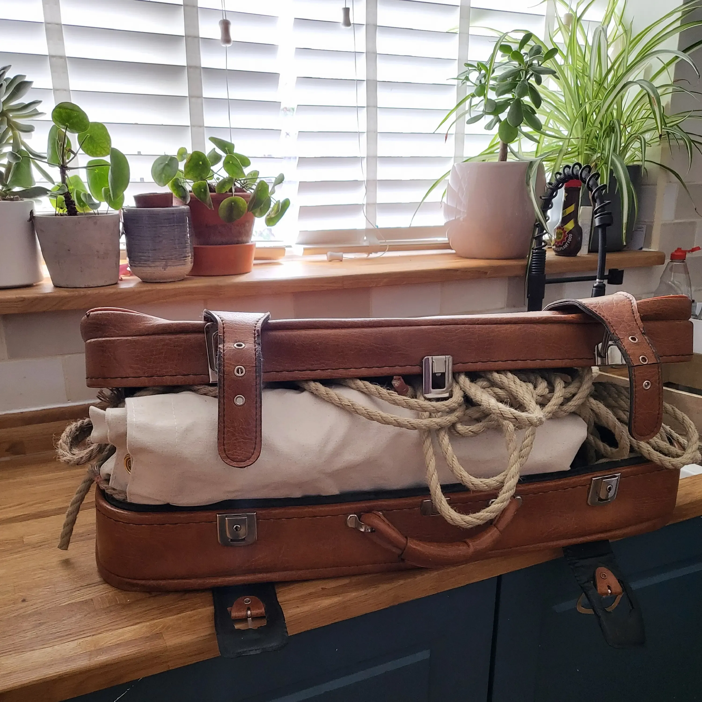

We design story-led trails for parks, heritage sites, schools and teams. Whether you want to build your own or have us build it with you, here's where you fit.
0.1 FOUR WAYS TO WORK WITH US
1. Creators & Event Makers
Who: Writers, narrative designers and indie game makers who want to build their own trails and scavenger hunts. (We know you think you can write better stories than us and draw better maps - You are probably right, and that's rather the point!)
What: A no-code studio for building low-impact, high-engagement events without custom software development. Scavenger-hunt mode is open for early access; the wider event tools run through our Alpha (UK, free events) and Beta programmes.
Next step: Join the early-access list, or see Self-Serve on the pricing page.
2. Educational Institutions (Modern Spatial Learning)
Who: Primary and secondary schools seeking an active, narrative-driven evolution of traditional orienteering.
(An interactive orienteering course where you can write the content and post questions/problem solving at each point?! This is fun, and the pupils will have it!)
What: Zero-friction outdoor learning trails hosted entirely within school grounds, designed to encourage physical exploration and team based problem solving.
Timeline: Current cohort full (pilots in progress) | Next intake Spring 2027
Next step: Apply for the next cohort on the pricing page.
3. Venues & Heritage Destinations (Evolving Permanent Installations)
Who: Country parks, historic estates, and public venues seeking to convert routine footfall into repeat, multi-visit engagement. (We are particularly excited about this!)
What: Free-to-access, long-form installations integrated subtly into the landscape. Stories evolve over time, requiring multiple short visits rather than a single one-off playthrough.
Timeline: Early Dialogue Open | Site Mapping Q4 2026 | Deployment Spring 2027
Next step: Email partnerships@qridian.com.
4. Corporate Teams & Private Events
Who: Organisations seeking a high-stakes, real-time outdoor challenge for their team, and estate, venue, or site managers interested in hosting one.
What: Bespoke events designed around your group and your site, from a competitive multi-team challenge to a relaxed story trail.
Timeline: Annual Event Planning Open
Next step: Email partnerships@qridian.com, or see Custom on the pricing page.
0.2 INITIATING DIALOGUE
If your venue, institution, or project aligns with one of the tracks above, we welcome an early conversation to discuss feasibility and timing.
Contact Us: To discuss a potential pilot or reserve a placement in an upcoming cohort, direct all early inquiries to partnerships@qridian.com detailing your site location, primary track, and prospective timeline. Just want to stay in the loop? Join the mailing list.
Subject: QRIDIAN/The Institute of Advanced Wandering
1.0 EXECUTIVE SUMMARY
We turn any space, from a local park to a corporate venue, into an interactive, story-driven journey. Using a mix of beautiful physical maps and clever digital tools, we help people explore, connect, and play without leaving a footprint on the land or a trace on their privacy.
Our first big test, at Holmebrook Valley Park, put 13 teams on the ground for 3.5 hours: 121km walked, 40 secrets uncovered, 24 trades made, and not a mark left on the land. Read the Full Impact Report.
1.1 HOW IT WORKS
1. A conversation. Tell us about your site, your audience and your timeline.
2. Story and map. We research the place, write the story and draw the map.
3. A test walk. We walk it, break it, and fix it before anyone else gets the chance.
4. Launch, then the report. Your visitors play; afterwards you get a plain-English picture of how it went.
2.0 SPATIAL STEWARDSHIP: ACTIVATING YOUR SPACE
From Pop-up to Permanent: We’re flexible because we know every site is different. Whether you need a high-energy weekend event or a fixture that stands the test of time, we work with you to ensure our presence fits your vision perfectly.
2.1 Pop-Ups: Perfect for launch weekends. We use digital handshakes and portable kits to create huge excitement with zero permanent impact on the environment. We come, we play, and we leave no trace.
2.2 Sustained Magic: For those looking for year-round engagement, we design low-profile, weather-resistant markers that allow the adventure to be played throughout the seasons.

3.0 THE QRIDIAN EXPERIENCE: OUR THREE PILLARS
Real-World Engagement: We design experiences that encourage players to look up at the environment, not down at their screens.
3.1 Physical Craftsmanship: Tactile tools built for the field.
Bespoke Cartography: Site-specific, hand-drawn maps available as digital downloads or ruggedised fabric prints.
Ruggedised Waypoints: Vandal-resistant, weatherproof interactive markers engineered to withstand the elements.
3.2 Narrative Engineering: Custom storytelling tailored to your site.
Heritage Curation: Transforming factual research and local history into structured, interactive journeys.
Creative Lore: Non-linear Rashomon-style mysteries where visitors piece together clues to reveal the narrative
3.3 The Economy Layer (The Satchel Protocol): Deepening engagement through play.
The Satchel: A digital inventory system for discovering and collecting virtual items during exploration.
The Forge & Market: A gamified economy where participants synthesise raw materials into high-value goods or engage in face-to-face bartering.
4.0 OUR PRIVACY PROMISE: THE "TRIPLE-LOCK"
Ethical Engagement, Safe for Everyone: We want people to feel safe and free while they play. That’s why we’ve built our tech to be privacy-first from the ground up.
4.1 No Accounts: Participants scan and play instantly. No sign-ups, no profiles, and no passwords.
4.2 No GPS Tracking: We respect your movement. We use interaction-based tracking—only recording when you choose to scan a point—never your live location.
4.3 No Paper Trail: We operate a delete-by-default policy. Once the session ends, all personal identifiers are purged.
5.0 SEEING THE IMPACT: INSIGHT & FLOW
Understanding how people move and play: We don’t just set up a game and walk away; we help you see your site through the players' eyes. By using clever trail design and point-weighting, we open up the map, helping visitors discover the specific locations and landmarks that make your site special.
5.1 Designing for Movement: Need to ease the pressure on a high-traffic trail? Or perhaps you want to invite people to a quiet, unseen corner of the park? We design our routes to naturally draw people toward specific areas. This helps you balance the crowd while making sure local amenities, like a perfectly timed coffee at the cafe, feel like a natural part of the adventure.

5.2 Holding Attention: We measure how well the game holds attention. Our framework consistently keeps visitors active, curious, and focused for 3.5+ hours. We’ll show you exactly how long people stayed in the zone and fully invested in exploring your site.
5.3 The Evidence: After the event, we provide a clear picture of the day’s impact. You'll see a breakdown of movement patterns and where people spent the most time, giving you the facts you need to protect sensitive areas or plan future site improvements.
6.0 PROVEN IMPACT: THE HOLMEBROOK PILOT
The Holmebrook Story, Our First Big Adventure: We put our QRidian Engine to the test at Holmebrook Valley Park, and the results were fantastic. We proved that by mixing a compelling story with economy game mechanics in a beautiful park, we could get people moving, thinking, and exploring. Most importantly, we showed that we could drive significant foot traffic to specific spots without leaving a single mark on the land.
By the numbers: 13 teams, 3.5 hours, 121km walked, 40 secrets uncovered, 68 items forged and 24 trades made.
Want to know more? Take a look at the Full Impact Report.
7.0 LEADERSHIP & GOVERNANCE: INDEPENDENT BY DESIGN
Total Oversight, Zero Outsourcing: We are a self-funded, independent partnership driven by a genuine passion for spatial storytelling. Both founders come from long careers in outdoor education, so we know what it takes to look after a group on real ground. By keeping every element of QRidian in-house, from the narrative architecture and coding to the physical craftsmanship, we ensure a level of quality and care that only founders can provide.
7.1 Direct Accountability: When you work with us on a pilot or partnership, you work directly with the creators. There are no account managers or outsourced development teams; you have a direct line to the people building your experience.
7.2 Agile & Ethical: Our independence allows us to stick to our Privacy-First principles and move quickly to adapt to your site’s specific needs without the delays of a traditional corporate hierarchy.
7.3 Full-Stack Craftsmanship: We own the entire process. The tech, the lore, and the physical markers are all designed and built by the two of us, ensuring that the digital and physical layers of your site fit together perfectly.

8.0 ENGINE SPECIFICATIONS & ARCHITECTURE
Subject: QRidian Framework Overview & System Capabilities (v1:7500)
The QRidian Engine is a lightweight, zero footprint spatial orchestration platform designed to deploy location based experiences across diverse physical footprints.
8.1 DYNAMIC SPATIAL NARRATIVE FRAMEWORK
Adaptive Story Routing: Native support for both structured, narrative-driven linear paths and completely open-world, freeform exploration trails across complex sites.
Pacing & Flow Controls: Built-in spatial analytics calculate physical walking distances and dwell times across narrative arcs, preventing crowd bottlenecks and visitor fatigue prior to physical deployment.
Multi-Arc Progression: Enables operators to run complex, multi-threaded stories and concurrent operational tracks across a single physical venue simultaneously.
8.2 PRECISION ENVIRONMENTAL MAPPING
High-Resolution Spatial Layering: Powered by custom topographical and LiDAR data, allowing exact terrain and elevation planning for trails across variable land types.
Brand-Aligned Custom Map Engine: System exports precise spatial boundaries and outlines for bespoke graphic illustration, then re-imports artistic vector maps into the platform without losing real-world physical alignment.
8.3 BALANCED ENGAGEMENT MECHANICS
Systemic Gameplay & Economies: Automated balancing tools handle real-time resource collection, point scoring, and physical world event progression.
Persistent World & Entities: Features reusable character archetypes and physical checkpoints that can be shared across multiple seasonal events or refreshed for new narratives.
8.4 ZERO-FRICTION VISITOR EXPERIENCE
Micro-Location Triggering (No GPS Required): Leverages physical touchpoints (NFC / QR) for high-reliability interaction, eliminating dead zones, battery drain, and signal reliance.
Dynamic Web App Delivery: Instant-loading progressive web application that dynamically skins and adapts to the specific client venue or event theme upon user entry.
Live Operations Dashboard: Provides real-time event monitoring, leaderboard tracking, and system telemetry during live operational windows.
System Availability & Deployment Status:
The QRidian Engine is currently in Alpha. Platform access is available through our Alpha programme (UK-based organisers hosting free events) and a Beta waitlist opening late Q4 / early Q1 2027 (see the pricing page).
Scavenger-hunt mode, our simplest way to build your own event, is open for early access. Partner cohorts for schools, venues and custom projects run on the timelines above. API documentation and general developer access are not currently available.